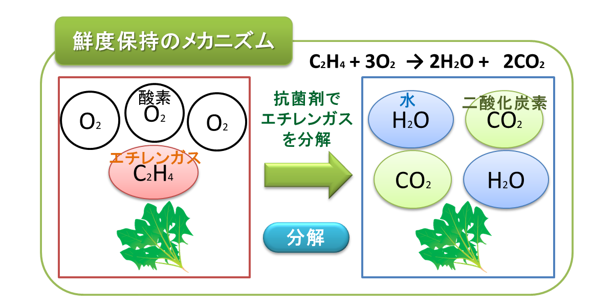
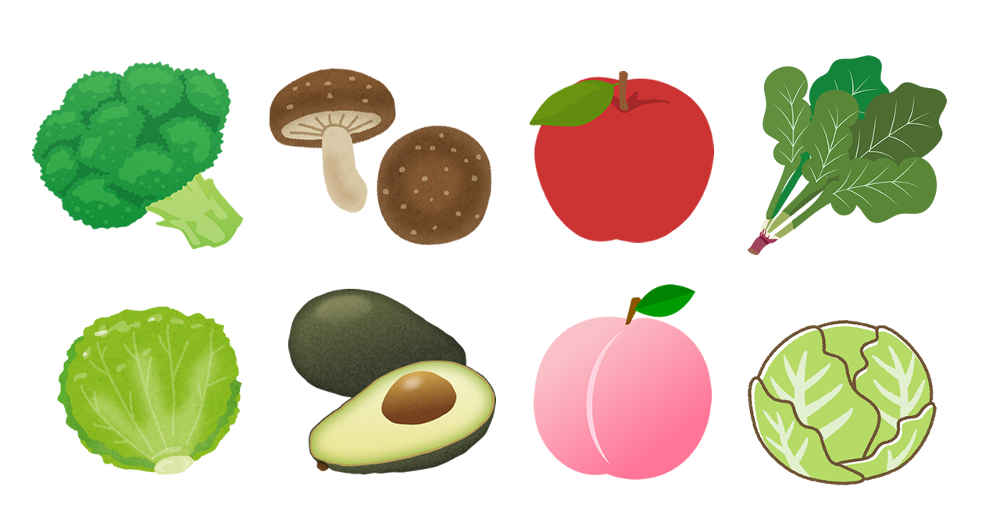

エチレンガスは野菜・果物の成長・熟成を促し、更に老化を進行させその結果、エチレンガスの影響で野菜・果物の鮮度・寿命が左右されます。
ミラクルフレッシュは特許申請中の青果保存技術でエチレンガスを効率よく二酸化炭素と水に分解し続け、抗菌・防カビ効果で腐敗を抑制させることで、青果のフレッシュさが飛躍的に延長します。

袋の内部に付着したエチレンが抗菌剤と酸素に反応し、水と二酸化炭素に分解されます。
青果物の劣化・酸化の原因となるエチレンガスと酸素が減少することで、鮮度が保持されます。

リンゴ、桃、バナナ、ブロッコリー、アボカド、トマト、シイタケ、キャベツ、ほうれん草、レタス etc
野菜・果物を入れて長持ちの違いをお試しください
①エチレンガスを吸着し、分解・排出のサイクルで持続的に処理。
②劣化の原因となるカビ・細菌の繁殖を抑制する抗菌効果を持つ。
呼吸制御による鮮度保持。呼吸の少ない根菜類には効果が薄い。